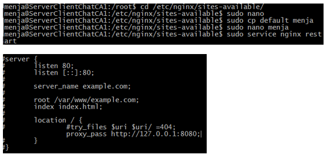
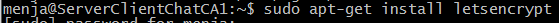
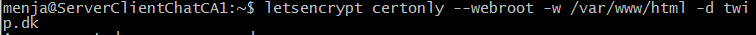
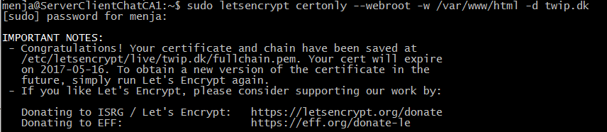
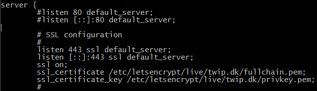

Da den kun skal bruges som en proxy server skal Nginx serveren konfigureres til, at videresende HTTP data fra port 80 til en Java server.
I dette tilfælde er det en Tomcat server som lytter på port 8080, på samme maskine. Det håndteres ved at åbne en teksteditor (nano), og ændre i filen default under location.
Installering af LetsEncrypt
Specificering af domain og path
 Redirect and SSL
